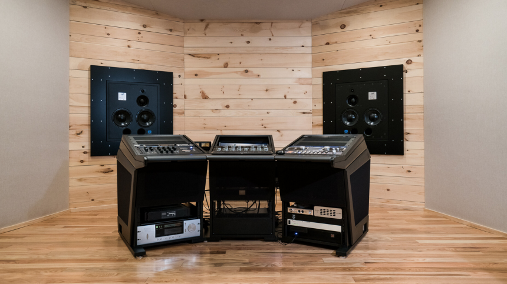

Mastering
Una vez ya mezclado, viene el proceso final que es el mastering. El mastering es el proceso final en una producción musical y el más complicado, porque puede ser la diferencia entre tener un sonido amateur o profesional. Al trabajar con los programas top de la industria como Pro Tools y Ableton Live, el sonido que recibirás será del mas alto nivel, estándar de la industria
